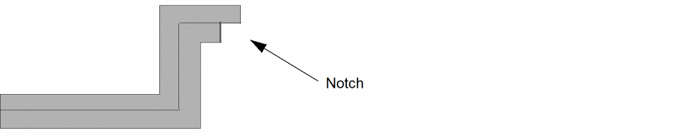
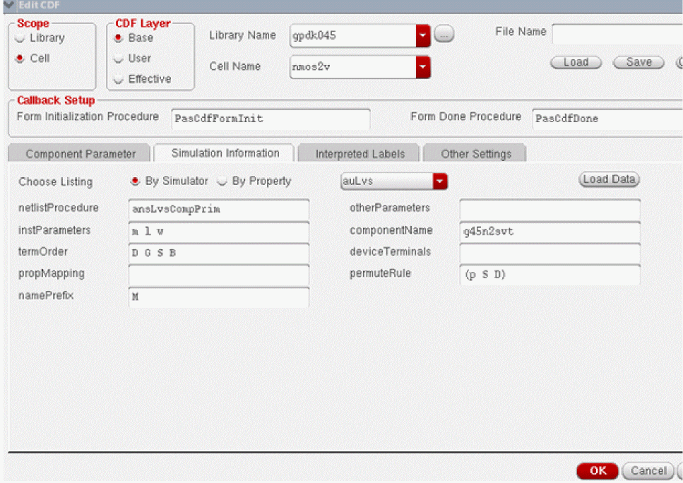
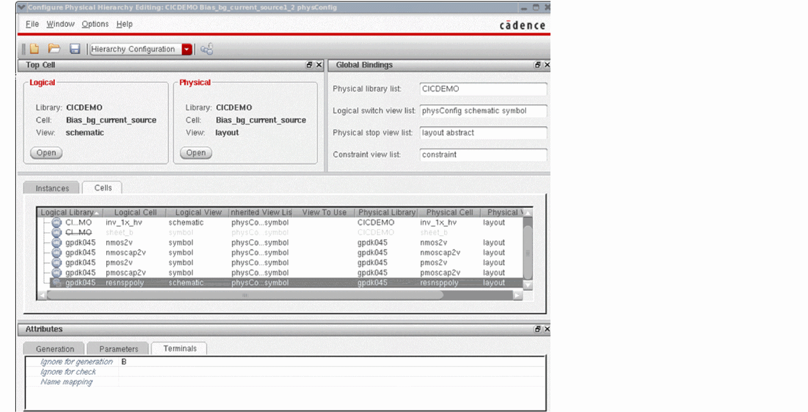

10
Troubleshooting Layout XL
This chapter tells you what to do if unexpected results occur while using the Virtuoso® Layout Suite XL layout editor (Layout XL). It covers the following topics.
- Troubleshooting Startup
- Troubleshooting Configure Physical Hierarchy
- Troubleshooting Constraint Migration
- Troubleshooting Parameter Evaluation
- Troubleshooting Generating a Layout
- Troubleshooting Generating Selected Components From Source
- Troubleshooting Cloning
- Troubleshooting Chaining And Folding
- Troubleshooting Editing
- Troubleshooting Connectivity Extraction
- Troubleshooting Update Binding
- Troubleshooting Layout XL Compliance
- Troubleshooting Performance
Troubleshooting Startup
- Invalid Markers from Previous Software Versions
- Options Form Does Not Appear
- Unable to Restart Layout XL after Opening Assura LVS or DRC
Troubleshooting Configure Physical Hierarchy
- Schematic Properties Not Present in physConfig
- NLP Expressions Cannot be Converted to the New Schema
- Global or Inherited Nets Beyond Physical Leaf Cells are not Detected
Troubleshooting Constraint Migration
Troubleshooting Parameter Evaluation
Troubleshooting Generating a Layout
Troubleshooting Generating Selected Components From Source
Troubleshooting Cloning
- Structure Already Exists in the Layout
- Connectivity Structure is Different
- Master Cells are Different
- Parameters or Properties are Different
- Automatic Parameter Update Causes Different Submasters (Message LX-2149)
Troubleshooting Chaining And Folding
Troubleshooting Editing
- Components Move Slowly
- Generate Layout Form Does Not Keep Values from the Last Entry
- Parameters Not Updated
- Schematic Not Editable
- Warning to Update Your Design Appears at Startup
Troubleshooting Connectivity Extraction
- Connections Not Made
- Markers for Nonexistent Overlaps and Shorts Appear
- Path Ends Not Accepted
- Placement and Routing Do Not Run
- Layout XL Does Not Recognize Physical Vias
- Moving Software Executables To a New Location
- Unmatched Instance Terminals are Automatically Removed
- Layout XL Commands Requiring Schematic Extraction
Troubleshooting Update Binding
Troubleshooting Layout XL Compliance
Troubleshooting Performance
Troubleshooting Startup
Invalid Markers from Previous Software Versions
If you are opening layouts you developed using previous versions of Virtuoso software, you can clean up the layout canvas and get rid of invalid markers.
-
From the layout window menu bar, choose Connectivity – Update – Components And Nets.
Layout XL resynchronizes the layout connectivity with the schematic connectivity. -
From the layout window menu bar, choose Verify – Markers – Delete All.
The markers disappear. - Choose File – Save.
-
From the layout window menu bar, choose Window – Close.
The layout window closes. - From the schematic window, choose Window – Close.
- The schematic window closes.
-
From the Command Interpreter Window (CIW), choose File – Open.
The Open File form is displayed. - From the Library Name cyclic field, choose the library name of your design.
- In the Cell Name field, type or select from the Cell Names list the cell name of your design.
- From the View Name cyclic field, choose the view name of your design.
-
Click OK.
The layout window appears, displaying the updated layout configuration. -
From the layout window menu bar, choose Launch – Layout XL.
The Palette assistant and the schematic view appear.
Options Form Does Not Appear
When you press F3 to see an options form listing possible choices for a command and the command does not have an options form, the message box shown below appears:
If you want the message box to appear every time you press F3 for a command that has no options form, click Yes.
If you do not want the message box to appear every time you press F3 for a command that has no options form, click No.
Unable to Restart Layout XL after Opening Assura LVS or DRC
In a session, if you close Layout XL and start Assura and then open Layout XL again, it is possible that you may not be able to launch Layout XL again until the library list is updated. To update the library list, set the shell environment variable, CPH_UPDATE_LIBLIST.
Troubleshooting Configure Physical Hierarchy
Schematic Properties Not Present in physConfig
A schematic instance contained in a cell must have its master translated first in order for the properties to be converted correctly. The dfIIoa20222 translator attempts to ensure that this always happens, however, it is not guaranteed. If the properties for a particular schematic instance do not appear in the physical configuration view, Cadence recommends that you translate your data to OpenAccess 2.2 first and then perform the conversion to use the IC 6.1 Layout XL schema as a separate step.
NLP Expressions Cannot be Converted to the New Schema
The conversion commands cannot convert the following schematic properties if they are defined as an NLP expression on a cell.
When the system encounters this situation it issues the following message.
Cannot convert the 'oldPropName' property with value 'nlpExpr' on instance 'instName' in logical cellview 'libName/cellName/viewName' because NLP expressions are not supported. Use the Configure Physical Hierarchy window to specify explicitly thenewOptionNameeither on a per cell or a per instance basis.
newOptionName is the name of the relevant field in the Configure Physical Hierarchy window’s Cells or Instances table or the name of the relevant option field in the Attributes pane. The mapping between oldPropName and newOptionName in the message is as follows.
| oldPropName | newOptionName |
|---|---|
Global or Inherited Nets Beyond Physical Leaf Cells are not Detected
The default behavior of the Configure Physical Hierarchy design elaboration was changed in version IC 6.1.2.500.14 and subsequent releases.
Previously, Configure Physical Hierarchy always elaborated the entire logical design hierarchy beyond the nodes which mapped to physical leaf cells. Now, the software stops the elaboration when it reaches a logical node that maps to a physical view with one of the view names specified in the Physical stop view list field.
This lets you use the physical stop view list to limit the logical elaboration for large hierarchical designs that would otherwise take a long time to open or might not open at all in Layout XL. However, it also means that global or inherited nets below the leaf instance in the schematic are not considered during the elaboration.
If your design relies on such nets, Cadence recommends that you switch off this environment and re-elaborate your design. To do this:
-
In the CIW, type
envSetVal("layoutXL" "cphStopLogicalElabAtPhysLeaf" 'boolean nil)
- Force a full re-elaboration by changing the Logical switch view list in the Global Bindings pane in the Configure Physical Hierarchy window.
Troubleshooting Constraint Migration
CMX Legacy Net Classes
CMX legacy net classes are listed in the XL Probe form but are not shown under the Net Class category in the Constraint Manager assistant. This does not impact the individual constraints migrated.
Troubleshooting Parameter Evaluation
Netlisting Mode
To ensure that CDF parameters are always evaluated correctly, make sure that the CDS_Netlisting_Mode shell environment variable is set to Analog.
-
Type the following commands in the CIW:
setShellEnvVar("CDS_Netlisting_Mode=Analog") cdsSetNetlistMode()
To check the mode currently set:
CDS_Netlisting_Mode shell environment variable set to Digital, Layout XL will not evaluate the CDF parameters by default. But, you can set the dbSearchCDF SKILL function to t to cause CDF to be searched for parameter values.
For more information on CDS_Netlisting_Mode, see
Related Topics
Use of pPar and Callbacks in a Design
Evaluating CDF Callbacks by Default
To ensure that SKILL callbacks defined on CDF parameters (for example, lxCombination) are evaluated by default, you must set the lxEvalCDFCallbacks environment variable to t.
lxEvalCDFCallbacks causes all SKILL callbacks defined on CDF parameters to be evaluated by default when you run the following Layout XL commands. Callbacks defined on buttons are never evaluated.
- Generate All From Source
- Generate Folded Devices
- Update Components And Nets
- Update Layout Parameters
- Update Schematic Parameters
- Back Annotate (Dummy backannotation)
The callbacks are evaluated in the order in which they are listed in the CDF, so it is important that you set the appropriate callback to the appropriate place in the list. For more information, see
Related Topics
Use of pPar and Callbacks in a Design
Troubleshooting Generating a Layout
Use of pPar and Callbacks in a Design
If a design using pPar() and callbacks is generating an incorrect Pcell layout, it is likely that one of the following requirements is not being met:
1. Shell environment variable CDS_Netlisting_Mode set to Analog
2. CDF parameter parseAsCEL set to yes
But, if a design is generating an incorrect layout inspite of both the conditions above met, then, it might be an underlying issue with the use of pPar() with callbacks that is preventing the layout from generating correctly. Cadence recommends avoiding the using of pPar() with callbacks. It is recommended that derived parameters be computed at the Pcell level. But, this may need a change in the PDK, which may not always be feasible. In such cases, manually triggering the callbacks by setting the lxEvalCDFCallbacks environment variable to t can help.
Troubleshooting Generating Selected Components From Source
If the Generate Selected From Source command fails, check that
-
The instance is not already placed in the layout.
If it is already placed, you cannot use Generate Selected From Source to generate it again. - All the required masters and reference views are present, including
Hierarchical Designs
If you push into a hierarchical schematic view beyond the layout stop point, you cannot use the Generate Selected From Source command to generate lower-level instances inside that top-level cell.
For example, assume there is a layout view derived from the specified stopList corresponding to a cell1 instantiated in the schematic. If you descend into an instance of cell1 and try to generate the lower-level instances, the command fails.
Implicit Inherited Connection Terminals to Local Nets
Generate Selected From Source does not create pins for implicit inherited connections to local nets (i.e., wires with netSet properties that do not have a ! in the name).
Troubleshooting Cloning
If a target clone cannot be found, the software displays an appropriate CIW message, such as the one below:
INFO (LX-1353): There are no target structures matching the selected clone source.
INFO (LX-1371): Either all the schematic components have already been generated in the layout view, or the criteria you specified in the Generate Clones form are too restrictive. Change the Search In mode to Layout or change the Search With criteria to make it less restrictive.
A list of possible reasons for not being able to find clones and how you can resolve the issue preventing the clone generation are described below.
Structure Already Exists in the Layout
The structure or part of the structure that you selected as the target already exists in the layout. For example, here R1, R2, and Q1 in the layout were the source components for clone search in Schematic and R4 (which is already implemented), R5, and Q2 were the target components.
In the example above, the clones cannot be found because R4 already exists in the layout. To overcome the issue, delete R4 from the layout and then search for matching targets. Else, generate Q2 and R5 in the layout and search for clones in the Layout instead of searching in the Schematic.
Connectivity Structure is Different
If the connectivity of the source and target structures is not the same, clones cannot be found.
For example, if you choose R1, R2, and Q1 as the source components, R6, R7, and Q2 cannot be found as clone target components because the clone source and clone target components are connected differently.
To overcome the issue, leave the Exact Connectivity check box deselected in the Generate Clones form. This allows matching targets with the same set of instances but different connectivity to be found during the clone search.
Master Cells are Different
If the master cells of the source and the target instances are not the same, matching target clones cannot be found.
More Source Components are Selected than Target Components
More source components are selected than target components. For example, if you select R1, R2, and Q1 as source components and run a search on Selected Set Only with R4 and Q2 selected in the schematic, no clones can be found.
To resolve the issue, when searching on Selected Set Only, ensure that the selected set in the schematic contains at least the same number of components as the clone source.
Parameters or Properties are Different
The parameters or properties of the source and target instances are not the same. For example, you could not use R1 and R2 in this diagram to clone R4 and R5 because their resistance values are different.
The target instance must have all properties with values the same as those on the source instance. In some cases, the target instance might have some additional properties as well.
In the example below, you can use R1, R2, and Q1 as source components to clone R4, R5, and Q2 because the targets have the same properties and values as the sources, even though one of the targets has additional properties.
To ignore the CDF parameters while searching for the clone target, you can use either:
To ignore properties while searching for the clone target; in the Parameters tab of the Connectivity form , select Properties used to ignore objects during generation and update and add the property names to be ignored.
Automatic Parameter Update Causes Different Submasters (Message LX-2149)
When you search for clones with Exact Parameter Match turned off, Layout XL also lists targets with components that do not have same parameter values. When you generate a clone from one of these targets, the software automatically updates the parameters and parameter values in the generated clone to match those defined on its schematic counterparts.
This automatic parameter update can lead to the creation of different submasters for the cloned instances. This in turn can cause problems when you try to generate synchronous clones and with existing abutments in the design.
You can avoid this situation by running the Update Layout Parameters command before selecting the clone source and then Find Matching Targets with Exact Parameters match turned on. If the different submasters are causing problems with abutment, add the abutment properties to the list of properties to be ignored in the Parameters Tab of the Connectivity form.
To avoid the issue, ensure that all layout-only parameters, such as abutment parameters in this case, are properly ignored by Layout XL.
- Choose Launch – Configure Physical Hierarchy window.
- In the Cells tab, select the cell to be ignored.
- Select the Attributes – Parameters tab.
- In the Ignore for generation field, specify the abutment parameter names that need to be ignored for generation.
- Save and close the window.
The specified abutment parameters will be ignored by Layout XL commands such as Generate All From Source, Update Layout Parameters, Generate Clones, and Check Against Source.
Because Check Against Source will ignore the specified abutment parameters, no mismatch between the layout and schematic parameters, if any, is reported.
The Generate Clones command will be able to generate synchronous clones because it will not require the schematic and layout abutment parameters to be the same.
Troubleshooting Chaining
Device Alignment Changes with Change in Folding Threshold or Chaining
If you find that the alignment that you specified before placing an instance in the layout changes after you change the transistor folding threshold, this is expected behavior.
Device alignment is not preserved if you change the folding threshold because when the folding threshold is changed, the devices are recreated with default alignment. Therefore, if you want the newly folded devices to follow the alignment that you had specified before changing the folding threshold, you will need to specify the alignment again.
Troubleshooting Editing
Components Move Slowly
If you find that the Move command works too slowly, especially when you have many iterated instances, turn off the display of incomplete net flight lines or display only nets that are relevant to the current task.
Generate Layout Form Does Not Keep Values from the Last Entry
The Generate Layout form displays default values each time it opens, it does not carry over values from the previous time the form was displayed.
To use predefined settings, set the appropriate environment variables in your .cdsenv file before you start Layout XL. Alternatively, you can load predefined cellview information from another OpenAccess cellview. For more information, see .
Parameters Not Updated
If the parameters are not updated the way you expect, check for the presence of the lxParamsToIgnore property on components of your design.
Schematic Not Editable
If you cannot make changes to the schematic,
-
Check that the schematic is editable. (If it is, the word “Editing” is displayed in the window banner; if it is not, the word “Reading” is displayed.)
If it is not editable, make it so using the File – Make Editable command. - Check with your system administrator that you have a license for the Virtuoso Schematic Editor (product 302).
Warning to Update Your Design Appears at Startup
When you open a design in Layout XL and an Info window appears, it means that the schematic has been changed after the last time the layout was changed, so the layout does not represent the latest version of the design.
You can check the layout against the changed schematic using the layout window Check Against Source command and then update the layout view using either the Update Components And Nets or Define Device Correspondence commands as needed.
Troubleshooting Connectivity Extraction
Connections Not Made
If the software does not accept an electrical connection you make, make sure that the following information is set in the technology file. For more information, see Technology File Requirements for Layout XL and in particular Connectivity Rules.
-
Connectivity information in the appropriate constraint group, for example
virtuosoDefaultExtractorSetup. -
Layer information in the
layerRulessection.
Also check that the layer properties were set when you made the connection.
Markers for Nonexistent Overlaps and Shorts Appear
If there are markers for nonexistent overlaps and shorts in the layout, make sure that the appropriate layer was active when the path was created.
If this does not fix the problem, make sure that the layer information and connectivity information are set correctly in the technology file. For more information, see Technology File Requirements for Layout XL
Path Ends Not Accepted
If the software rejects the final segment of a path or wire connection and displays the following message.
First or last segment of created path has length less than or equal to half the path width
-
Press
Returnto end a path instead of double clicking the mouse (do not double click to end a path).
-
From the layout window menu bar, choose Options – Display and set the Snap Mode for Create commands to something other than L90XFirst or L90YFirst.
When you use the L90XFirst or L90YFirst snap modes, the double click often makes a notch in the path, which triggers the error message and can cause errors in mask layout.

Placement and Routing Do Not Run
Layout XL does not let you place or route the elements of a design unless you have defined which layers of your layout design are conducting layers.
If you try to place or route your design before defining the conducting layers, you get an error message.
Define the layers you want to be conducting layers in the viaLayers constraint in the technology file. For more information, see Constraint Groups.
Layout XL Does Not Recognize Physical Vias
If you have an existing design in which Layout XL does not recognize physical vias, you need to add a property with name function and value via to the master cellview of the via or to the component description format (CDF) for via layout.
For information on adding a via, see
Moving Software Executables To a New Location
If you move software executables to a different location other than specified by manufacturing, the custom placer function may take longer to start because it is searching for the executable.
Unmatched Instance Terminals are Automatically Removed
When loading designs that have been edited outside Layout XL, the connectivity extractor silently cleans up any instance terminals that have no associated terminal in the cell master. This can mean that you are asked to save your design, even though nothing has visibly changed.
Layout XL Commands Requiring Schematic Extraction
Certain Layout XL commands, such as Update Components And Nets, Pick From Schematic, Generate All From Source, check that the schematic connectivity is up-to-date before proceeding. If the schematic has been changed since it was last extracted, you see a message indicating that it needs to be re-extracted.
If you see this message every time you run one of these commands, it is likely that there are errors in the schematic that have prevented the previous extraction from completing successfully.
If this is the case, you need to run extraction again, fix any errors highlighted, and save the schematic. The next time you run a Layout XL command, you will not be prompted to re-extract the schematic.
Troubleshooting Layout XL Compliance
Setting up the PDK to Improve Layout XL Compliance
The troubleshooting information in this section is targeted at CAD team or library owners who can implement the recommended set up at the PDK level so that the benefits of these global updates can be experienced by all the layout engineers using the library.
Prerequisites
- A layout with pins and cells or Pcells that can be bound to schematic counterparts.
- An LVS-clean layout that can use physical connectivity to establish the required schematic versus layout bindings.
The table below lists some likely layout issues that a CAD team member or a Library owner can resolve at the global level:
| Layout issue | Impact | How to resolve... |
|---|---|---|
|
Shorts reported in the layout during Update Binding or during a Layout XL-compliance check |
Edit the Component Description Format (CDF) to add the missing permute rule. For information on what permute rules are and why it is important to set these correctly to create a layout that is Layout XL compliant, see Editing the CDF to Add Permute Rules. |
|
|
Shorts reported in the layout during extraction of shapes at the level below the specified extraction level |
Edit the technology file to define stop layers. For information on what stop layers are and why it is important to set these correctly to create a layout that is Layout XL compliant, see Editing the Technology File to Add Stop Layers. |
|
|
Edit the Library Attributes Mapping (LAM) file to add missing component types and resolve terminal mismatches between the schematic and the layout. For information on editing the LAM file, see Library and Attributes Mapping File Syntax. |
Editing the CDF to Add Permute Rules
Layout XL being connectivity-aware, it expects a net to be connected to the correct terminal. Else, a short is reported.
If you bring a layout created outside of Layout XL into Layout XL, it is likely that the layout will have its S and D (or the n and p terminals) connected interchangeably. This can cause shorts to be reported during an Update Binding run as the connectivity will be considered as incorrect in Layout XL. To resolve this, you can create permute rules for any devices that are likely to be connected in this manner.
Consider the following example. Here a schematic with a single nmos2v device has its net D connected to terminal D and net S connected to terminal S, as shown in the figure below.
Let us assume that the layout was created outside Layout XL in a non-connectivity aware environment. Because the layout device is symmetrical and the logical connectivity from the schematic was not considered, you could connect the nets S and D to either side of the device.
If we open the layout in Layout XL, the device connectivity will be considered. If the layout net D is connected to the S terminal, the physical connectivity (routing) is found to be different from the logical connectivity in the schematic. This results in opens and shorts being reported because the terminals are incorrectly connected, as shown in the figure below.
However, if it is acceptable to connect the terminals S and D interchangeably, we must specify the same using the appropriate CDF permute rule before launching the design in Layout XL.
-
Close the layout window, if open, and in the CIW, choose Tools – CDF – Edit.
The Edit CDF form displays, as shown below.
 - Set the value for Scope to Cell.
- Set the value for CDF Layer to Base.
-
Specify the Library Name and Cell Name.
For this example: - Select the Simulation Information tab.
- Select auLvs from the drop-down menu adjacent to Choose Listing.
- In the permuteRule field, type the permute rule, such as (p S D).
- Click OK.
For the CDF permute rule updates to take effect, open the design in Layout XL.
When the nmos2v is used in Layout XL, its S and D terminals can be connected interchangeably with no opens or short created, as shown below.
Additionally, when running Update Binding, it will use the permute rule, if required, to get the correct connectivity and increase the XL-compliance of the layout.
For more information on adding permute rules, see permuteRule.
Editing the Technology File to Add Stop Layers
In Layout XL, an extraction stop level 0 is sufficient to establish the connectivity, if connections are made to the pins of cells at the level below. However, if these connections are not made to the pins, the extraction level needs to be increased to consider the shapes at the level below.
Layout XL now has the capability to extract through all the extractable shapes in the level below the specified extraction level. However, this can lead to shorts because the lower-levels cells were not originally created to support extraction. Therefore, a stopLayer may have to be defined to stop the extraction at the defined shape, and prevent a short being created.
Consider a layout that contains:
The figure below represents cell I0 containing a poly shape (green) and a resdum shape (red dots).
At the top level (level 0), routes are created from Pins A and B to connect to the poly shape in cell I0. If we extract at level 0 by setting the Options – Layout XL – Connectivity – Hierarchy Control to 0, no short is created between nets A and B, as shown below. This is so because the poly shape in I0 is at level 1, therefore, not considered for extraction.
However, if the extraction depth is increased to 1 and the extractor is run again, a short is created between net A and B, as shown below. This is expected because the extractor now considers the poly shape within I0 as the extraction depth has been increased.
Although extracting at level 0 can prevent reporting shorts to lower levels, in some situations such as when finding off-pin connected at the level below, the extraction depth may need to be increased. This results in shorts being created. To avoid the shorts, a stop layer must be defined in the technology file. This can either be a real layer or a derived one.
Let us create a derived layer called stopRes in the technology file that can stop the extractor from extracting straight through I0. To add a stop layer:
-
Choose CIW – Technology Toolbox, use the
Dumpcommand to open and edit the existing technology. -
Create a
stopReslayer at the bottom of thetechDerivedLayerssection, as illustrated using the code snippet below:techDerivedLayers(
;( DerivedLayerName # composition )
;( ---------------- ------ ------------ )
( stopRes 10085 ( Poly 'not Resdum ))
) ;techDerivedLayers
-
Ensure that all layers used in the
techDerivedLayersection have an entry in the layer function section, as illustrated using the code snippet below:layerRules(
functions(
;( layer function [maskNumber])
;( ----- -------- ------------)
( Poly "poly" 14 )
( Resdum "recognition" 38 )
) ;functions
) ;layerRules
-
Add the
stopReslayer to the interconnect section of thevirtuosoDefaultExtractorSetupconstraint group, as shown in the code snippet below:;( group [override] )
;( ----- ---------- )
( "virtuosoDefaultExtractorSetup" nil
interconnect(
( validLayers (substrate2 gate polycutoxide stopRes PWdummy Nwell Oxide Poly Nimp Pimp Cont Metal1 Via1 Metal2 Via2 Metal3 Via3 Metal4 Via4 Metal5 Via5 Metal6 Via6 Metal7 Via7 Metal8 Via8 Metal9 Via9 Metal10 Via10 Metal11 ) )
) ;interconnect
) ;virtuosoDefaultExtractorSetup
- Use the Load command in the Technology Toolbox to load the updated technology file.
Let us now run the extraction at level 1 to confirm that the extractor no longer reports any shorts to the lower level. The Annotation Browser, as displayed in the figure below, reports no shorts. This is due to the introduction of the stopRes layer that we added in the technology file.
32. If any shorts are created, a stop layer should be created in the technology file to avoid them, using the method shown above.
For more information on adding stop layers, see Specifying Stop Layers in the validLayers Constraint.
Editing the LAM File to Increase Layout XL Compliance
What is a LAM file?
The Library and Attributes Mapping file—LAM file (cph.lam)—stores the schematic and layout library data, such as:
- symbol properties that drive layout generation
- component type information for a given library
- library and cell-level mapping information
Currently, there is no graphical user interface available to help you create or edit a LAM file. Therefore, a new file or any edits should be created using your preferred text editor.
The values you set in the LAM file can also be set in Configure Physical Hierarchy (CPH), but if set in CPH, they are written to the physConfig view and will only apply to the current design. Setting the values in the LAM file ensures that every user benefits from the setting.
For more information on CPH, see Configuring the Physical Hierarchy. For more information on the LAM file, see Library and Attributes Mapping File Syntax.
The values that can be set in a LAM file are:
-
Component types – Layout XL uses component types to identify devices. For example,
nmosandpmoscomponent types are used to identify the device terminals for Update Binding. Additionally, the width parameter and the folding threshold are used by automatic folding.
If the disableFolding environment variable is set and the folding threshold for the component type is set to0, folding is disabled. - Terminal mapping between the schematic and the layout – Often there are terminal mismatches between schematic and layout and these are reported as connectivity differences in Layout XL. This terminal mismatch can also prevent Update Binding from giving a good result.
Setting Component Types in LAM
The setting of component types is recommended to help identify devices in Layout XL. It is good practice to define a component type for at least nmos and pmos devices and then map the appropriate cells to the component type, before the library is released to users.
The setting of component types allows the Update Binding command to recognize devices and their terminals.
Consider the following example. In the gpdk045 library there are two cells: nmos2v and pmos2v. To identify these devices as nmos and pmos devices respectively, we can create component types in the LAM file and map the cells to the correct component type. The following section of the sample LAM file illustrates this:
<PHYSICAL>
<COMPONENT_TYPE_GROUPS>
<LIB NAME="gpdk045">
<COMPONENT_TYPE_GROUP NAME="nmos">
<COMP_CLASS>NMOS</COMP_CLASS>
<WIDTH>fw</WIDTH>
<DRAIN>D</DRAIN>
<GATE>G</GATE>
<SOURCE>S</SOURCE>
<BULK>B</BULK>
<ACTIVE_LP>Oxide drawing</ACTIVE_LP>
<FOLD_THRESH>1e-06</FOLD_THRESH>
</COMPONENT_TYPE_GROUP>
<COMPONENT_TYPE_GROUP NAME="pmos">
<COMP_CLASS>PMOS</COMP_CLASS>
<WIDTH>fw</WIDTH>
<DRAIN>D</DRAIN>
<GATE>G</GATE>
<SOURCE>S</SOURCE>
<BULK>B</BULK>
<ACTIVE_LP>Oxide drawing</ACTIVE_LP>
<FOLD_THRESH>1e-06</FOLD_THRESH>
</COMPONENT_TYPE_GROUP>
</LIB>
</COMPONENT_TYPE_GROUPS>
<MAPPINGS>
<LIB NAME="gpdk045">
<CELL NAME="nmos2v">
<COMPONENT_TYPE>
<NAME>nmos</NAME>
<LIB>gpdk045</LIB>
</COMPONENT_TYPE>
</CELL>
<CELL NAME="pmos2v">
<COMPONENT_TYPE>
<NAME>pmos</NAME>
<LIB>gpdk045</LIB>
</COMPONENT_TYPE>
</CELL>
</LIB>
</MAPPINGS>
</PHYSICAL>
In our example, the nmos and pmos cells are in the gpk045 library. The LAM file for this library will be automatically read when Layout XL is opened, and you can view it using the CPH window. In CPH, you can verify if the LAM file settings you made are correct.
To verify the LAM file update in CPH:
-
Choose Launch – Configure Physical Hierarchy.
The Configure Physical Hierarchy window displays. - Select Component Types from the drop-down menu at the top of the window.
The CPH window displays the two component types – nmos and pmos – that you added using the LAM file, as shown in the figure below.
Resolving Terminal Mismatches between Schematic and Layout
Consider the example below. In the gpdk045 library, there is a cell resnspoply. As can be seen in the screenshow below, the schematic has 3 terminals: B, MINUS and PLUS while the layout has 2 terminals: MINUS and PLUS. This causes Layout XL to report a connectivity difference, as seen in the XL Status column of the Navigator.
To stop the connectivity differences from being reported, you can add an ignore for generation property to the B terminal in the library LAM file, as shown below.
In the previous example, we had to edit the physical section of the LAM file to set up the component types. In this example, we are defining how the layout is generated from the schematic. Therefore, we need to edit the logical section of the LAM file.
<LOGICAL>
<LIB NAME="gpdk045">
<CELL NAME="resnsppoly">
<VIEW NAME="symbol">
<PARAMETERS>
<IGNORE>
<CHECK></CHECK>
<GEN></GEN>
</IGNORE>
</PARAMETERS>
<TERMINALS>
<IGNORE>
<CHECK></CHECK>
<GEN>B</GEN>
</IGNORE>
</TERMINALS>
</VIEW>
</CELL>
</LIB>
</LOGICAL>
To verify the LAM settings in CPH:
-
Launch – Configure Physical Hierarchy.
The Configure Physical Hierarchy form opens in Hierarchy Configuration mode. - In the middle pane, select the Cells tab and then select the resnsppoly entry in the table.
-
In the Attributes tab at the bottom of the window, select the Terminals tab, as displayed in the figure below.
 -
Notice that the Ignore for generation property displays on terminal
B, as set in the LAM file.
After editing the LAM file, if you open a cellview in Layout XL and generate a resnsppoly device from the schematic, it will no longer report a connectivity difference. This is because the B terminal is now ignored, as shown in the figure below.
The sample LAM file below illustrates the use of the ignore property in the Parameters section.
<PARAMETERS>
<IGNORE>
<CHECK>sa sb leftTap RightTap</CHECK>
<GEN>simM</GEN>
</IGNORE>
</PARAMETERS>
Example – Complete LAM File
The sample below represents a complete LAM File that is set to improve the Layout XL compliance for a design.
<!DOCTYPE LAM_FILE>
<LIBRARY_DATA>
<VERSION NUMBER="0.2" />
<LOGICAL>
<LIB NAME="gpdk045">
<CELL NAME="resnsppoly">
<VIEW NAME="symbol">
<PARAMETERS>
<IGNORE>
<CHECK></CHECK>
<GEN></GEN>
</IGNORE>
</PARAMETERS>
<TERMINALS>
<IGNORE>
<GEN>B</GEN>
</IGNORE>
</TERMINALS>
</VIEW>
</CELL>
</LIB>
</LOGICAL>
<PHYSICAL>
<COMPONENT_TYPE_GROUPS>
<LIB NAME="gpdk045">
<COMPONENT_TYPE_GROUP NAME="nmos">
<COMP_CLASS>NMOS</COMP_CLASS>
<WIDTH>fw</WIDTH>
<DRAIN>D</DRAIN>
<GATE>G</GATE>
<SOURCE>S</SOURCE>
<BULK>B</BULK>
<ACTIVE_LP>Oxide drawing</ACTIVE_LP>
<FOLD_THRESH>1e-06</FOLD_THRESH>
</COMPONENT_TYPE_GROUP>
<COMPONENT_TYPE_GROUP NAME="pmos">
<COMP_CLASS>PMOS</COMP_CLASS>
<WIDTH>fw</WIDTH>
<DRAIN>D</DRAIN>
<GATE>G</GATE>
<SOURCE>S</SOURCE>
<BULK>B</BULK>
<ACTIVE_LP>Oxide drawing</ACTIVE_LP>
<FOLD_THRESH>1e-06</FOLD_THRESH>
</COMPONENT_TYPE_GROUP>
</LIB>
</COMPONENT_TYPE_GROUPS>
<MAPPINGS>
<LIB NAME="gpdk045">
<CELL NAME="nmos2v">
<COMPONENT_TYPE>
<NAME>nmos</NAME>
<LIB>gpdk045</LIB>
</COMPONENT_TYPE>
</CELL>
<CELL NAME="pmos2v">
<COMPONENT_TYPE>
<NAME>pmos</NAME>
<LIB>gpdk045</LIB>
</COMPONENT_TYPE>
</CELL>
</LIB>
</MAPPINGS>
</PHYSICAL>
</LIBRARY_DATA>
Troubleshooting Update Binding
Ignoring Route Cells
If route cells are set to be ignored during Update Binding but some devices have stop layers defined while others do not, you can do either of the following for the cells to be processed appropriately during an Update Binding run.
- Add the stop layer for the devices that do not have them already defined and run Update Binding again.
- Run Update Binding without ignoring route cells and manually add ignores on route cells after they have been reported by Update Binding.
For information on adding stop layers, see Specifying Stop Layers in the validLayers Constraint.
Updating Instance Bindings after Running MakeCell
If you run the MakeCell command after flattening a device, the Update Binding command may not be able to update the instance bindings to reflect the change. To enable the Update Binding command to effectively update the instance bindings:
- In the Navigator assistant or layout canvas, right-click the made cell instance and choose the Hierarchy – Unset Transparent command to prevent the binder from binding devices inside the made cell.
- Right-click the made cellview and edit it to rename the terminals to match the schematic nmos device.
- Relaunch Layout XL on the top cellview, where the made cell is instantiated.
- Run the Update Binding command using the default options.
For more information, see Update Binding.
Troubleshooting Performance
Design Fails to Open or Takes a Long Time to Open
If you design takes a long time to open in Layout XL, or fails to open at all, try the following.
-
If your design has many devices which overlap but have not been abutted previously, and you start Layout XL with full connectivity extraction, by default the software attempts to automatically abut the devices in question. To prevent this, set the lxLocalAbutment environment variable to
t. -
If your design is hierarchical, it might be that the logical elaboration performed by Configure Physical Hierarchy is causing the problem.
You can use the physical stop view list to limit the logical elaboration by switching on the cphStopLogicalElabAtPhysLeaf environment variable. This stops the elaboration of the logical design hierarchy when a node is reached which maps to one of the view names specified in the Physical stop view list field.
Layout XL Is Slow
The following considerations can help you improve Layout XL performance speed.
- Instead of displaying flight lines for all the incomplete nets in the design, use the highlighting features of the path command or probing to determine connections or display only nets you are working on or that are relevant to the current task.
- If you need extra pins in the layout for feedthrough nets or substrate connections, consider adding those after you have completed the main portion of the design. Adding extra pins increases the number of nets the extractor manages and degrades performance.
-
Specify only layers to be used as interconnect in the
validLayersconstraint Using more layers than necessary causes the extractor to check all shapes on those layers, which slows performance. If you do not have interconnect to wells, do not specify the well in thevalidLayersconstraint.For more information, see Constraint Groups.
Return to top